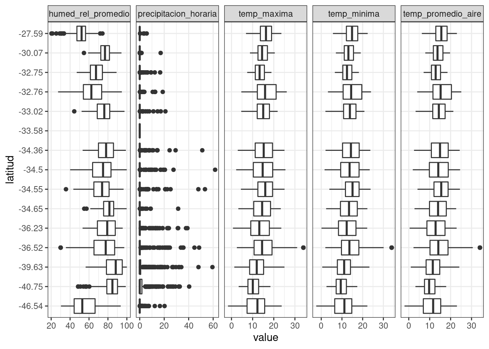
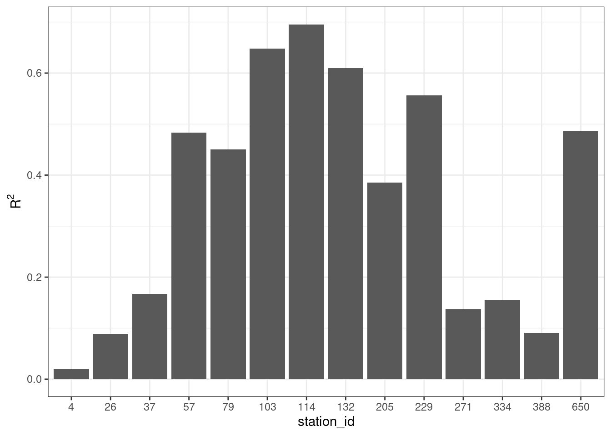

Examen
Minería de Datos (DTSE1017)
1 Mineria de datos con {dplyr},{tidyr}, {ggplot2} y {purrr}
- (10pts) Cargue los datos climáticos de la red agromet
- (20pts) Filtre para las siguientes estaciones
set.seed(4231)
ids <- data |>
slice_sample(n=15) |>
select(station_id) |>
pull(station_id)
ids [1] 103 37 4 247 388 229 334 57 132 271 79 205 650 114 26- (10pts) Cargue los datos de metadata de agromet.
- (30pts) Calcule el promedio diario para todas las estaciones de las variables de temperatura y humedad relativa.
Rows: 5,475
Columns: 6
Groups: station_id [15]
$ station_id <dbl> 4, 4, 4, 4, 4, 4, 4, 4, 4, 4, 4, 4, 4, 4, 4, 4, 4, …
$ dia <dttm> 2021-01-01, 2021-01-02, 2021-01-03, 2021-01-04, 20…
$ temp_promedio_aire <dbl> 21.13333, 20.11667, 19.28333, 18.98333, 18.92083, 1…
$ humed_rel_promedio <dbl> 51.26190, 54.55417, 57.78750, 57.43333, 56.65000, 5…
$ temp_minima <dbl> 20.59524, 19.61250, 18.72083, 18.55000, 18.39167, 1…
$ temp_maxima <dbl> 21.71429, 20.63333, 19.85417, 19.39583, 19.42083, 1…- (30pts) Calcule la precipitación acumulada diaria para todas las estaciones de las variables de temperatura.
Rows: 5,475
Columns: 3
Groups: station_id [15]
$ station_id <dbl> 4, 4, 4, 4, 4, 4, 4, 4, 4, 4, 4, 4, 4, 4, 4, 4, …
$ dia <dttm> 2021-01-01, 2021-01-02, 2021-01-03, 2021-01-04,…
$ precipitacion_horaria <dbl> 0, 0, 0, 0, 0, 0, 0, 0, 0, 0, 0, 0, 0, 0, 0, 0, …- (30pts) Una los datos de temperaturas promedio dia, precipitación acumulada diaria y metadata.
Rows: 5,475
Columns: 14
Groups: station_id [15]
$ station_id <dbl> 4, 4, 4, 4, 4, 4, 4, 4, 4, 4, 4, 4, 4, 4, 4, 4, …
$ dia <dttm> 2021-01-01, 2021-01-02, 2021-01-03, 2021-01-04,…
$ precipitacion_horaria <dbl> 0, 0, 0, 0, 0, 0, 0, 0, 0, 0, 0, 0, 0, 0, 0, 0, …
$ temp_promedio_aire <dbl> 21.13333, 20.11667, 19.28333, 18.98333, 18.92083…
$ humed_rel_promedio <dbl> 51.26190, 54.55417, 57.78750, 57.43333, 56.65000…
$ temp_minima <dbl> 20.59524, 19.61250, 18.72083, 18.55000, 18.39167…
$ temp_maxima <dbl> 21.71429, 20.63333, 19.85417, 19.39583, 19.42083…
$ institucion <chr> "FDF", "FDF", "FDF", "FDF", "FDF", "FDF", "FDF",…
$ nombre_ema <chr> "Jotabeche", "Jotabeche", "Jotabeche", "Jotabech…
$ comuna <chr> "Tierra Amarilla", "Tierra Amarilla", "Tierra Am…
$ region <chr> "Atacama", "Atacama", "Atacama", "Atacama", "Ata…
$ latitud <dbl> -27.58861, -27.58861, -27.58861, -27.58861, -27.…
$ longitud <dbl> -70.24472, -70.24472, -70.24472, -70.24472, -70.…
$ fecha_de_alta <dttm> 2013-03-08 06:49:12, 2013-03-08 06:49:12, 2013-…- (30pts) Convierta las columnas de temperaturas, precipitacion y humedad relativa a formato largo.
Rows: 27,375
Columns: 11
Groups: station_id [15]
$ station_id <dbl> 4, 4, 4, 4, 4, 4, 4, 4, 4, 4, 4, 4, 4, 4, 4, 4, 4, 4, 4,…
$ dia <dttm> 2021-01-01, 2021-01-01, 2021-01-01, 2021-01-01, 2021-01…
$ institucion <chr> "FDF", "FDF", "FDF", "FDF", "FDF", "FDF", "FDF", "FDF", …
$ nombre_ema <chr> "Jotabeche", "Jotabeche", "Jotabeche", "Jotabeche", "Jot…
$ comuna <chr> "Tierra Amarilla", "Tierra Amarilla", "Tierra Amarilla",…
$ region <chr> "Atacama", "Atacama", "Atacama", "Atacama", "Atacama", "…
$ latitud <dbl> -27.58861, -27.58861, -27.58861, -27.58861, -27.58861, -…
$ longitud <dbl> -70.24472, -70.24472, -70.24472, -70.24472, -70.24472, -…
$ fecha_de_alta <dttm> 2013-03-08 06:49:12, 2013-03-08 06:49:12, 2013-03-08 06…
$ name <chr> "precipitacion_horaria", "temp_promedio_aire", "humed_re…
$ value <dbl> 0.00000, 21.13333, 51.26190, 20.59524, 21.71429, 0.00000…- (50pts) Cree un gráfico de tipo boxplot con
{ggplot2}para comparar las distribuciones de las variables de precipitación, temperaturas y humedad relativa.

- (60pts) Cree modelos de regresion lineal para evaluar la relaicón entre humedad relativa y temperatura promedio para cada estación.
\[HR = \beta_0+\beta_1\cdot T\]
Rows: 14
Columns: 3
$ station_id <dbl> 4, 26, 37, 57, 79, 103, 114, 132, 205, 229, 271, 334, 388, …
$ data <list> [<tbl_df[361 x 6]>], [<tbl_df[363 x 6]>], [<tbl_df[364 x 6…
$ mod <list> [56.2932836, -0.3244333, 1.82497787, 4.78739927, 7.7503715…- (50pts) Extraiga los valores de \(R^2\) de los modelos de regresión lineal y haga un gráfico para compararlos.
